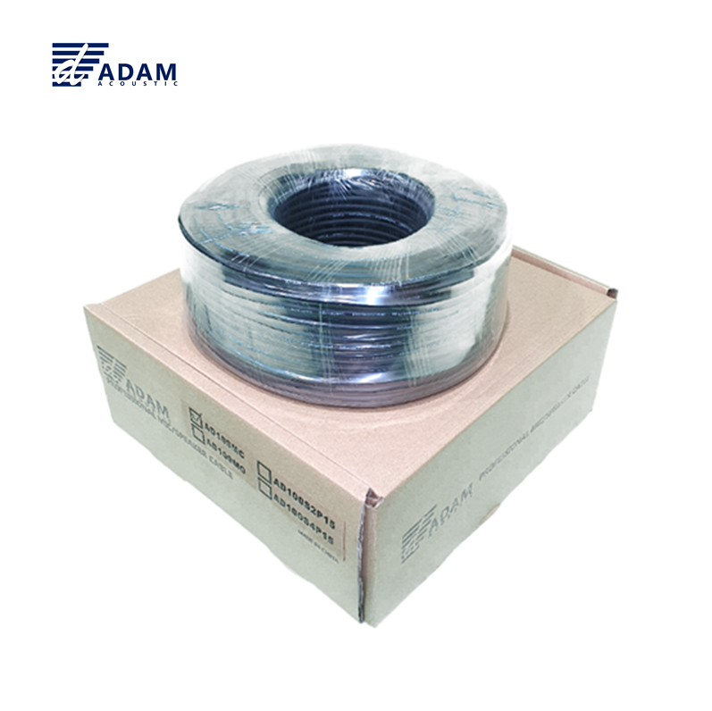
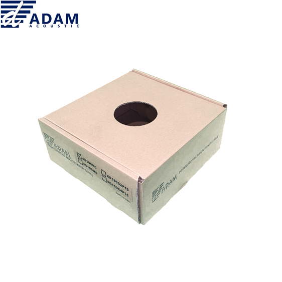
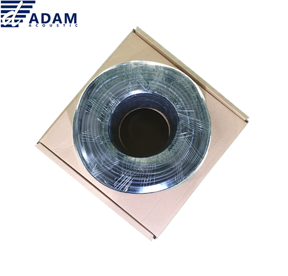

AD100MC는 CCAM(Copper Clad Aluminum Magnesium) 도체를 사용한 100M 롤타입 마이크 케이블입니다. MC102와 동일한 케이블 사양(2코어 신호선 20심×0.12mm + 64심 실드)으로, 현장에서 필요한 길이만큼 재단하여 커넥터를 직접 조립해 사용할 수 있습니다. 교회·학교·공연장 등 대규모 배선 공사에 경제적인 선택입니다.

CCAM 도체 100M 롤타입 마이크 케이블. 현장 재단 · 커넥터 조립용.
| 길이 | 소비자가 (VAT 포함) | 비고 |
|---|---|---|
| 100M (1롤) | 110,000원 | 커넥터 별도 |
ADAM AD100MC는 MC102 마이크케이블과 동일한 CCAM(Copper Clad Aluminum Magnesium) 도체를 사용한 100M 롤타입 벌크 케이블입니다. 커넥터가 조립되지 않은 상태로 공급되므로, 현장에서 필요한 길이만큼 잘라 XLR·55TS 등 원하는 커넥터를 직접 납땜하여 사용합니다.
신호선은 0.12mm 두께 와이어 20심 × 2코어 밸런스드 구성이며, 접지 차폐는 0.12mm 두께 와이어 64심으로 이루어져 있습니다. 교회·학교·공연장·강당 등 대규모 배선 공사 시 완제품 케이블을 개별 구매하는 것보다 경제적이며, 정확히 필요한 길이로 맞춤 제작할 수 있어 배선 정리가 깔끔합니다.
AD100MC 100M 롤타입 마이크케이블 패키지 이미지입니다.


AD100MC 롤타입 마이크케이블의 핵심 포인트입니다.
음향 케이블에 사용되는 구리 도체의 종류별 특성과 가격대를 비교합니다. 도체 재질은 신호 전달 품질, 내구성, 가격에 직접적인 영향을 줍니다.
| 항목 | CCA | CCAM | OFC | OCC |
|---|---|---|---|---|
| 정식 명칭 | Copper Clad Aluminum | Copper Clad Aluminum Magnesium | Oxygen-Free Copper | Ohno Continuous Casting |
| 구리 순도 | — | — | 99.95%+ | 99.9997%+ |
| 전도성 | ★★☆☆☆ | ★★★☆☆ | ★★★★☆ | ★★★★★ |
| 내산화성 | ★★☆☆☆ | ★★★☆☆ | ★★★★☆ | ★★★★★ |
| 기계적 강도 | ★★☆☆☆ | ★★★☆☆ | ★★★☆☆ | ★★★★☆ |
| 무게 | 가벼움 | 가벼움 | 보통 | 보통 |
| 주요 용도 | 임시 배선 소모품 | 교회·학교 일반 행사 | 프로 공연 레코딩 | 하이엔드 마스터링 |
AD100MC의 상세 기술 사양입니다.
| 모델명 | AD100MC |
|---|---|
| 케이블 타입 | 롤타입 마이크케이블 (CCAM) · 커넥터 별도 |
| 도체 | CCAM (Copper Clad Aluminum Magnesium) |
| 신호선 | 0.12mm × 20심 × 2코어 (≈24 AWG 상당) |
| 접지 실드 | 0.12mm × 64심 |
| 외경 (O.D.) | 6mm |
| 연결 방식 | Balanced (밸런스드 2코어) |
| 판매 단위 | 100M (1롤) |
| 커넥터 | 없음 (별도 조립 필요) |
| 동일 사양 완제품 | MC102 (XLR M ↔ XLR F, 3M~10M) |
AD100MC 롤타입 마이크케이블의 대표적인 활용 분야입니다.